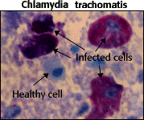

Sexually Transmitted Diseases Problem Set
Problem 2: Common STD That May Cause Infertility if Left Untreated
Help to answer the question|
Which of the following sexually transmitted diseases may cause infertility? |
Tutorial
Chlamydia|
In both men and women, if left untreated, chlamydia may cause chronic pelvic pain and permanent damage to the reproductive organs leading to infertility.
According to the Centers for Disease Control, chlamydia is the most prevalent sexually transmitted diseases in the United States. An estimated four million Americans get infected with chlamydia each year. A survey by the Kaiser Family Foundation found that only 23% of Americans even knew that chlamydia was an STD. Chlamydia is a disease that infects both men and women. Chlamydia, although easily cured, often goes undiagnosed because it seldom causes symptoms. As many as 65% of women and 25% of men with Chlamydia infection will have no symptoms until complications set in. A study of college women following routine gynecological examination showed that 79% who tested positive for chlamydia had no symptoms of the disease. Ultimately as many as 1 in 10 infected women become infertile from advanced stages of this disease. When diagnosed, chlamydia infections are treatable with specific antibiotic drugs. | |
|
Chlamydia is caused by Chlamydia trachomatis, an unusual bacterium. Like a bacterium it is responsive to antibiotics, but like a virus it needs a host cell to replicate its genetic material. |
 Used with permission of © Dr. C. J. Maré |
Complications
| As mentioned above, if left untreated, chlamydia may cause chronic pelvic pain and permanent damage to the reproductive organs leading to infertility in both men and women. In addition, women may develop pelvic inflammatory disease (PID), an infection of the upper reproductive tract. This infection can cause ectopic or tubal pregnancy, a leading cause of pregnancy-related deaths. Infected pregnant women can infect their babies during delivery. To the infected babies it causes ear, eye, and lung infections. |
Transmission

|
Chlamydia is transmitted through any vaginal, oral, or anal sexual contact in which body fluids are exchanged. It also facilitates HIV transmission. Condoms, used consistently and correctly, are very effective in preventing transmission of this disease as well as transmission of HIV. |
Symptoms
In women: |
Treatment
|
Chlamydia infections can be treated with specific antibiotics that relieve symptoms and cure the infection. It is important to follow medical instructions carefully and return for follow up examinations.
The partner (or partners) of the diagnosed person should also be treated even if they show no symptoms. Otherwise, they will continue reinfecting each other. Sex should be avoided until both partners have been successfully treated. |


University of Arizona
Wednesday, September 30,1998
Contact the Development Team
http://biology.arizona.edu
All contents copyright © 1998. All rights reserved.